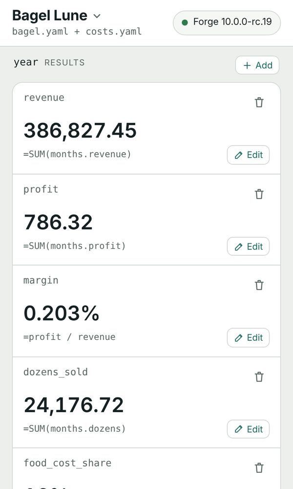

Financial models you can read, diff and trust.
Forge calculates a financial model written as plain text: 203 Excel-style functions, scenarios, Monte Carlo and more. People read it, AI agents write it, and it gives the same answer every time. Try it in your browser: nothing to install, nothing sent anywhere.

Why plain text
Readable
A formula says months.revenue, not B7:G42. The model reviews and merges like code.
Writable by AI
An agent edits YAML and checks it with Forge's own tools, over MCP, instead of guessing at a spreadsheet.
Checked, not trusted
Functions are tested against Gnumeric, LibreOffice and R. Models still export to Excel.
Projects
Forge
A financial modeling engine in Rust: a command line, an MCP server for AI agents, and Forge Studio, which runs the same engine in your browser and works offline.
Ref
Turns a web page into clean JSON for an AI agent, and can reuse a session you signed in to yourself.